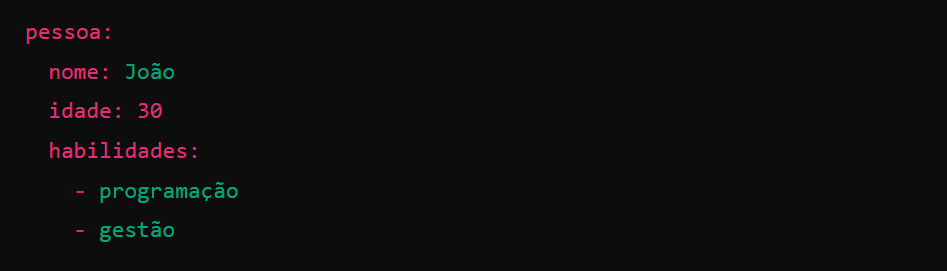

Python Libraries
Algumas das bibliotecas Python que eu usei no projeto:
Rich
O Python rich é uma biblioteca que facilita a criação de interfaces de linha de comando (CLI) visualmente atraentes e informativas.

psutil
psutil (utilitários de processo e sistema) é uma biblioteca multiplataforma para recuperar informações sobre processos em execução e utilização do sistema (CPU, memória, discos, rede, sensores) em Python. É útil principalmente para monitoramento do sistema, criação de perfil e limitação de recursos de processos e gerenciamento de processos em execução. Ele implementa muitas funcionalidades oferecidas pelas ferramentas clássicas de linha de comando do UNIX, como ps, top, iotop, lsof, netstat, ifconfig, free e outras.

YAML
YAML (Yet Another Markup Language) é um formato de serialização de dados legível para humanos, amplamente usado para configurar arquivos de forma simples e clara. Ele é frequentemente utilizado em sistemas de configuração, como Kubernetes, Ansible e outros.

PyYAML Documentation
YAML: The Missing Battery in Python
scapy

Welcome to Scapy
paramiko
O Paramiko é uma biblioteca de Python utilizada para implementar conexões SSH (Secure Shell) de maneira segura e automatizada. Com ela, é possível realizar tarefas como executar comandos remotamente, transferir arquivos (usando SFTP), ou até mesmo criar túneis SSH. O Paramiko suporta autenticação por senha e por chave SSH, proporcionando uma forma segura de administrar servidores e dispositivos de rede de maneira remota. É amplamente utilizada por administradores de sistemas e desenvolvedores para automatizar tarefas de administração de servidores e scripts que interagem com máquinas remotas de forma segura. paramiko DocumentationWelcome to Paramiko!